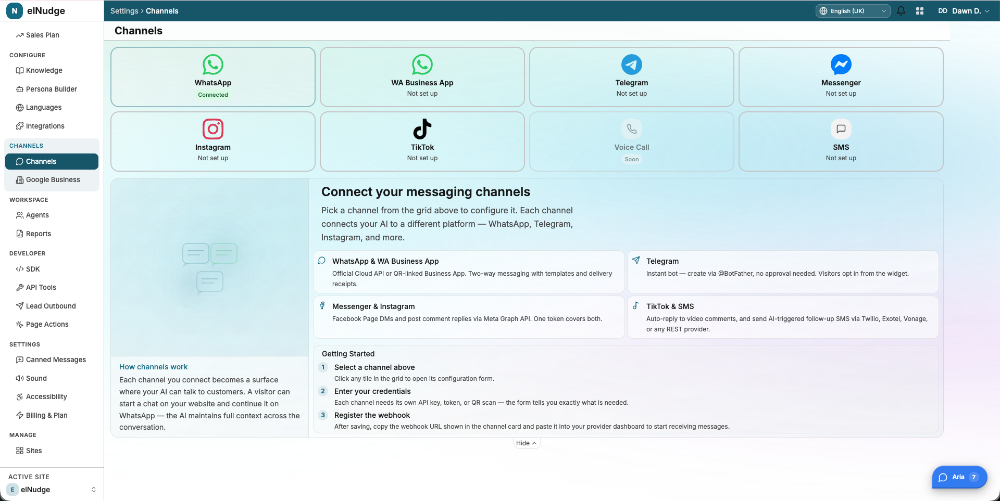
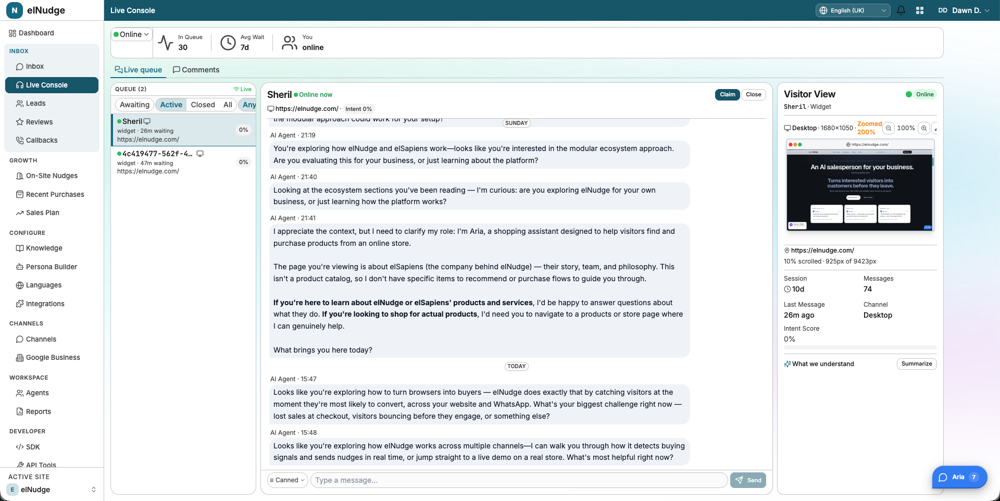
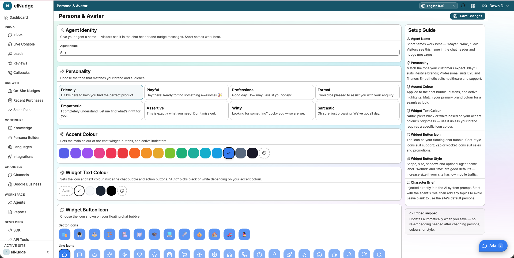
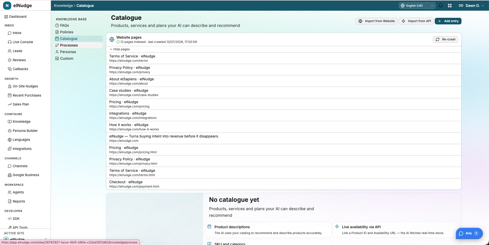
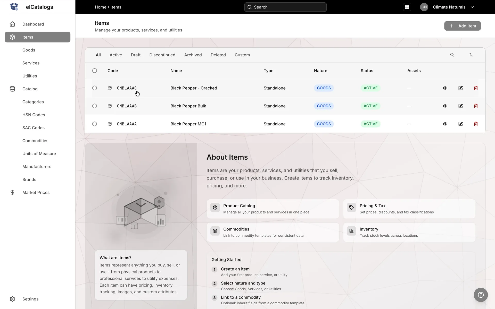
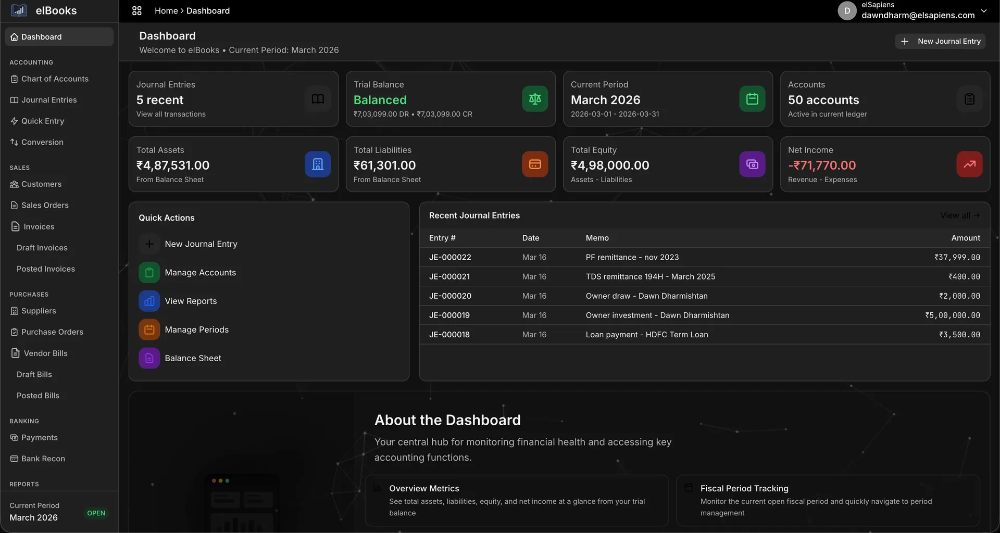

elNudge
An AI salesperson for your business — one that speaks first.
Turns interested visitors into customers before they leave. More conversions from the traffic you already have — no extra ad spend.
A concierge, not a chatbot.
The best salesperson in a shop notices you hesitating and walks over at exactly the right moment. elNudge is that person — for a website, running around the clock with no human agents.
It watches
Silent, cookie-free signals — scroll, hover, cart activity, exit speed — build a live picture of each visitor.
It senses the moment
A live intent score catches the instant a buyer is about to leave, or is stuck deciding.
It speaks first
An AI-written message opens the conversation, answers questions, and helps close the sale.
The plain-language version: most tools wait to be asked. elNudge starts the conversation.
The right word, at the right moment.
HIGH_INTENT_STALL — 45s on the page, no cart action.
Personalised to the visitor's journey and the merchant's brand voice.
Add to cart, apply coupons, navigate — from inside the conversation.
Rendered in an isolated Shadow DOM — it never clashes with the host site's styles.
Four steps, running every session.
Watch
The SDK streams behavioural events over a live WebSocket to the backend.
Score
The core service turns events into a live intent score per visitor.
Speak
When a threshold trips, the ai service asks Claude what to say.
Act
A nudge appears in the Shadow-DOM widget and the conversation begins.
track → score → decide → nudge → chat · the whole loop happens in real time, in the browser
Three moments that make or break a sale.
Visitor reads the product page 45s without adding to cart.
Cursor moves toward the browser's back button.
60 seconds idle at the payment or shipping step.
How a "score" is built.
No black box. Each visitor action adds or removes points; sequences of actions add bonuses. When the score crosses a threshold, a nudge is considered.
Positive signals
Negative signals
Hesitation and retreat pull the score down, so nudges fire on real intent.
Per-merchant tuning
Every weight can be overridden per workspace — the same engine adapts to a fashion store or a B2B catalog.
One path to remember.
A visitor event flows left to right — and the nudge travels back down the same pipe.
The real-time path
widget
tracks behaviour in the visitor's browser
relay
real-time gateway, pub/sub
core
turns events into a live intent score
ai
asks Claude what to say, runs the tools
Claude
writes the nudge and the replies
Alongside it
dashboard
the React merchant console
api
merchant REST + GraphQL, billing
analytics
funnels & conversion reporting
Resting on
Built with, and for, this problem.
Backend
Go microservices (workspace 1.26). chi HTTP router, gorilla WebSocket, gRPC + Protobuf via buf between services.
Frontend
React + Vite + TypeScript dashboard. TanStack Query, GraphQL, i18next, shared elSDK packages, Capacitor for mobile.
Data
PostgreSQL 16 with pgvector for AI embeddings; event tables partitioned monthly. Redis 7 for session state, pub/sub and rate limiting.
Intelligence
Anthropic Claude for conversation. Voyage AI embeddings power retrieval over each merchant's knowledge base.
One Go workspace · orchestrated with Docker Compose · shared elSDK component packages
One script tag. Any website.
A single TypeScript SDK drops onto Shopify, WooCommerce, Wix or plain HTML. Live in about five minutes, no developer needed.
<!-- Paste once, you're live --> <script src="https://cdn.elnudge.com/latest/eln.js" data-site-key="sk_live_xxx" data-language="hi" async></script>
Shadow DOM
Isolated DOM — never clashes with the host site's styles.
WebSocket
Events stream to the relay in real time over one persistent connection.
Privacy-first
First-party signals only. Built-in consent manager, no third-party cookies.
SPA-aware
Detects route changes and scrapes product data on modern single-page stores.
Claude, tuned for cost and speed.
Right model for the plan. Free / Starter / Growth run on claude-haiku; Scale / Enterprise on claude-sonnet — quality where it's paid for, economy everywhere else.
Prompt caching. Each merchant's persona and catalog are cached at the API; only fresh per-visitor context is sent each call — a 60–80% cut in AI cost.
Agent loop with tools. The ai service runs a tool-use loop; merchants register their own tools via a dynamic registry.
Knowledge retrieval (RAG). Voyage AI embeddings (1024-dim) in pgvector let the AI answer from each merchant's own product knowledge.
The right message, the right place.
Four nudge formats
Chat bubble, toast, exit modal and sticky bar. Anti-spam built in: max 3 per session, silent after two dismissals.
Beyond the website
The same brain follows the lead across WhatsApp, Instagram, Messenger, Telegram and TikTok — plus outbound voice calling.

The backend, in real screens.



Speaks your customer's language.
Built on the elSapiens ecosystem.
elNudge is one part of a ready, modular ecosystem of proven systems — shaped around each business instead of built from scratch. You don't adapt to a tool. The system adapts to your business.
One platform, many apps.





One platform, shared foundations.
One way of building. Nearly every service is Go with gRPC/Protobuf; nearly every UI is React + Vite + TypeScript on a shared elSDK. New apps start fast.
One identity. elAuth signs users in once; elAccounts is the shared party master. No app reinvents login or "who is this customer".
Shared plumbing. Geolocations, currency, media and messaging are built once and reused — so product teams solve business problems, not infrastructure.
elNudge sits on top. It's the growth engine of the ecosystem — the same discipline, pointed at turning visitors into revenue.
A real product, built on a real platform.
Proven architecture
5 Go microservices, a lightweight browser SDK, and a plan-tiered Claude AI layer.
Cost-aware AI
Model tiering, prompt caching and RAG keep per-session AI cost viable even for small merchants.
Ecosystem leverage
Shared identity, data and services mean elNudge ships faster and integrates deeper than a standalone tool.
elnudge.com · dawndharm@elsapiens.com